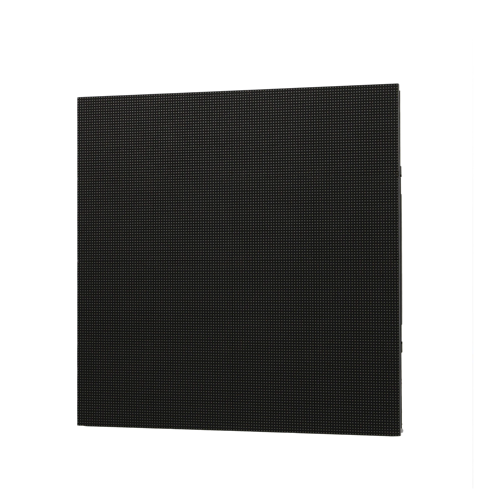
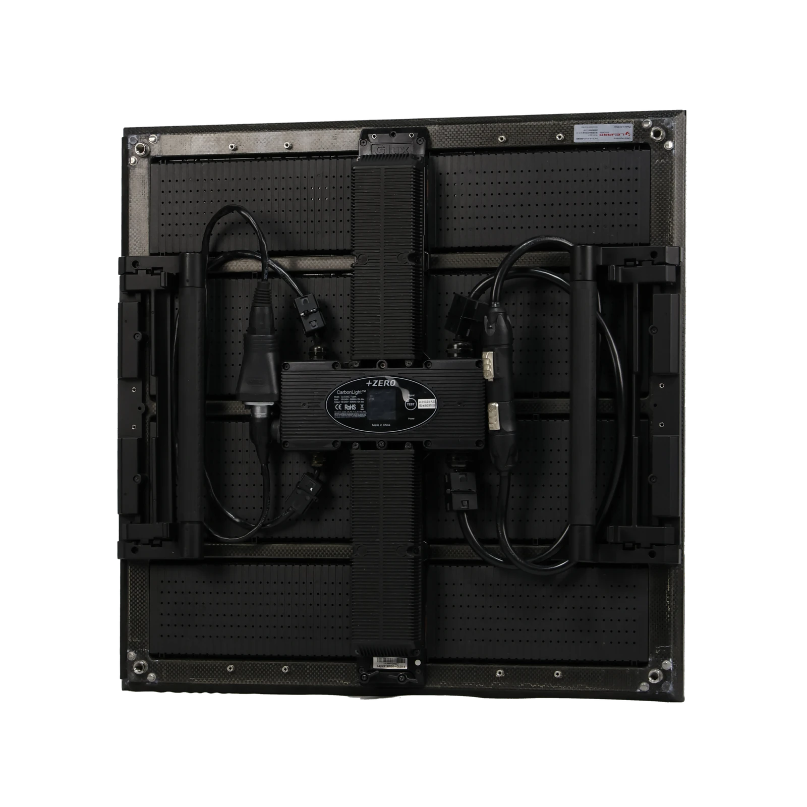
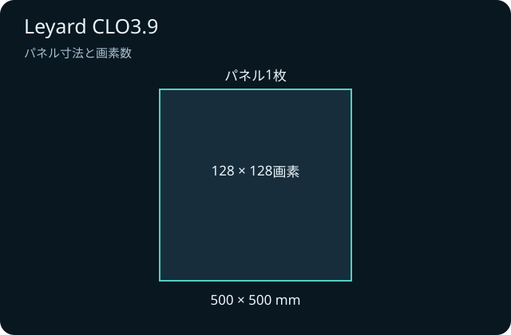

いつ使う？
昼夜と日差しの向き、本番時間を整理する。
LED ↗EQUIPMENT / 68
屋外対応LEDパネル
屋外のステージにも、映像を見やすく届ける。
KEY SPECIFICATIONS

画像を大きく見る ＋画像出典：プラスゼロ Leyard CLO3.9 製品ページ ↗
CLO3.9の表示面。正方形の黒いLEDパネルです。


01 / ROLE & FLOW
実際の配線・端子構成は案件に合わせて決めます。
02 / BEFORE YOUR BRIEF
昼夜と日差しの向き、本番時間を整理する。
支持方法、観客導線、搬入経路を図面で合わせる。
風雨の停止基準と退避連絡を本番前に決める。
03 / CHOOSING THE RIGHT TOOL
屋外イベントの映像表示や、日中の客席へ案内を届ける画面の検討に。映像素材・日差し・観客の位置を合わせて計画します。
屋外対応でも、強風や豪雨の中で使い続けられるわけではありません。支持構造と風雨の停止基準は、設置場所ごとに決めます。
屋内用CLI3.9と名称や寸法が似ていても別の機種です。出庫時にCLO3.9の型式を照合し、使用する支持部材・信号系統・電源を合わせます。昼と夜では見やすい明るさが異なるため、実際の客席から調整します。
参考資料：製品取扱元の仕様案内 ↗（2026年11月5日照合）。重さ・消費電力はLeyard Europe 公式 CLO シリーズ資料 ↗（2020年7月版、2026年11月12日照合。1枚あたりの表記）。吊り荷重と回路容量は、本体の型式と仕様が確定するまで決めず、設営前に責任者へ相談します。
日程、屋内外、画面の幅と高さ、枚数、使用する仕様、制御・支持部材、搬入出、設営・本番操作の担当範囲をお聞かせください。本体・周辺機材・搬入出・設営・本番操作・撤去を分けて、必要な範囲を整理します。セットの付属品や人員が自動で含まれる表示ではありません。
04 / RELATED EQUIPMENT